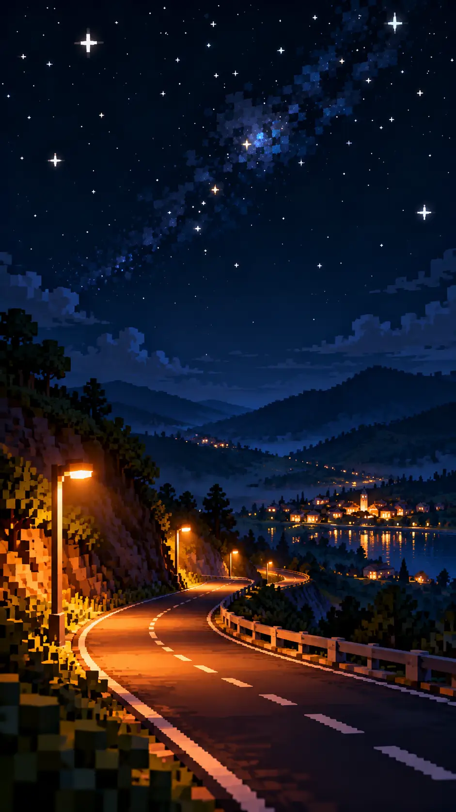Switchback Radio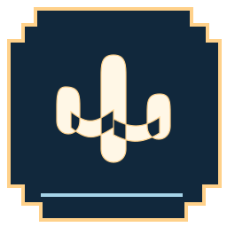Pixel nocturneTake the long way home.Custom geometry · seek · native motion
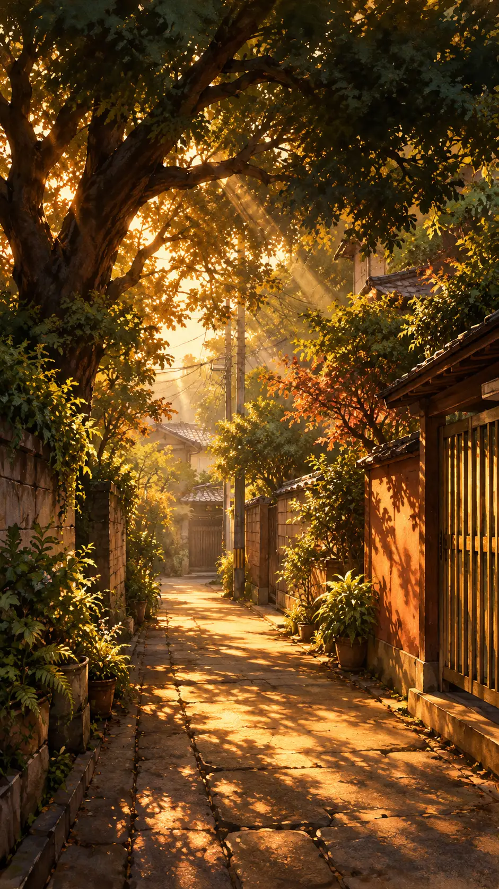Komorebi Hour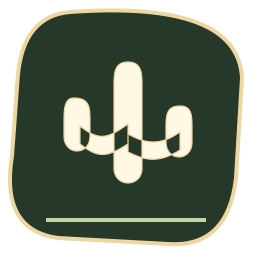Botanical cinemaStay where the light falls.Custom geometry · seek · native motion
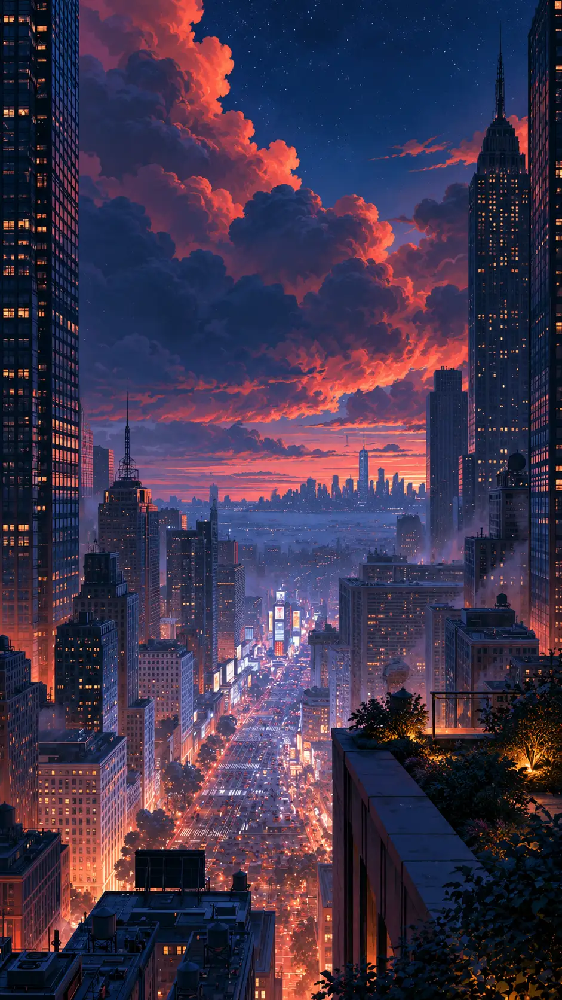Rooftop Reverie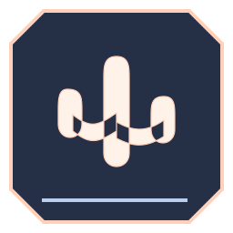Architectural duskA city of songs, after sunset.Custom geometry · seek · native motion
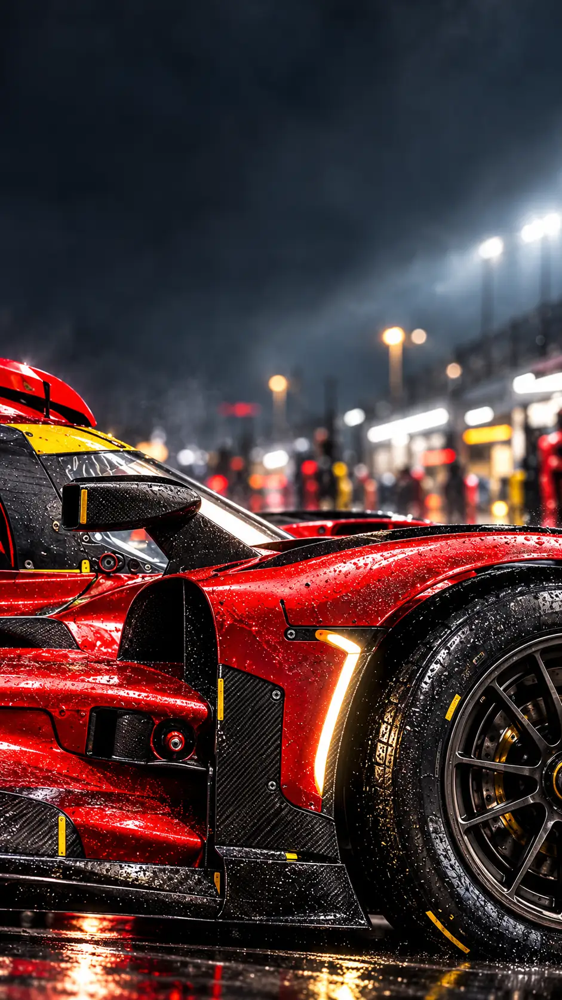Apex Telemetry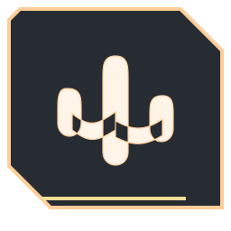Motorsport engineeringEvery beat. Full commitment.Custom geometry · seek · native motion